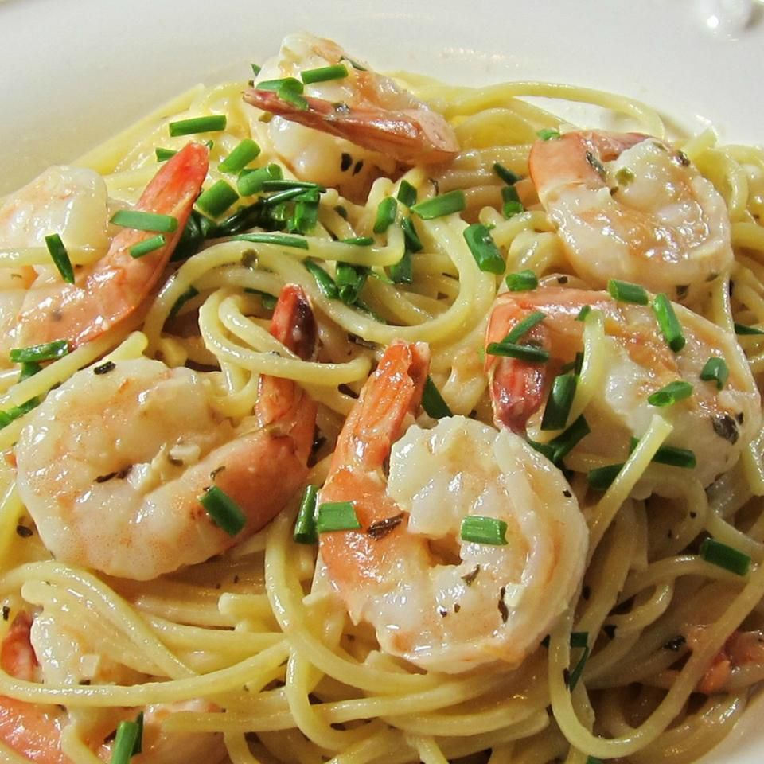

Home
Happy Shrimp Recipe

Description
Happy Shrimp is a quick 30 minute meal, great for a family during a busy weekday. Made with simple ingredients, yet full of flavor! Your family will enjoy this meal.
Ingredients
- 1/4 cup butter
- 1 1/2 tsp minced garlic
- 1 LB peeled and deveined medium shrimp
- 1/4 cup chopped green onions
- 1/4 cup dry white wine
- 1/3 cup heavy cream
- 2 tbsp chopped fresh basil
- 2 chopped roma tomatoes
- Salt, pepper, onion powder, and garlic powder to taste
Steps
- Melt butter over medium-high heat and stir in shrimp, garlic, and green onions for about 5 minutes then set aside.
- Pour in wine, cream, tomatoes, and basil. Bring to a simmer then reduce heat to medium-low and simmer till sauce coats the back of the spoon, about 10 minutes.
- Pour back in the shrimp into sauce and season to taste.
- Serve with angel hair pasta and garlic bread on the side.